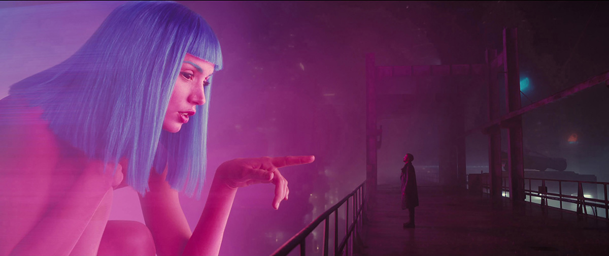

Features
- programmable
- versatile
- pure AI
- anything you wish for
Does Joi Actually Love K?
It's one of the most ambiguous questions of Blade Runner 2049, but does hologram Joi genuinely feel love for K? The original Blade Runner was Ridley Scott's next project after the huge success of Alien. The movie was adapted from the Philip K. Dick novel Do Androids Dream Of Electric Sheep? and follows Harrison Ford's "Blade Runner," which is basically a cop sent to hunt and kill artificial humans dubbed replicants. Blade Runner is considered a classic now and is one of the most influential sci-fi films ever made, but it was a box-office dud upon release. It wasn't until the release of Ridley Scott's director's cut - which removed Ford's monotone narration and a hideously out of place "happy" ending - that it truly clicked with movie fans.
